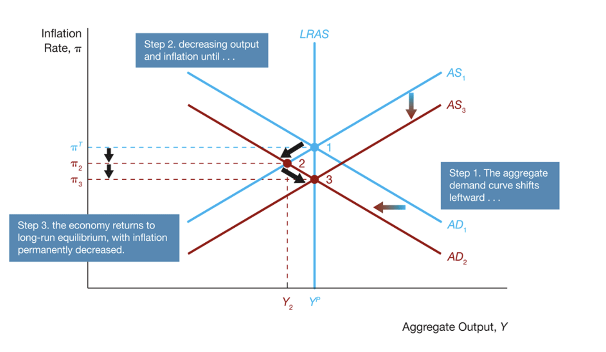
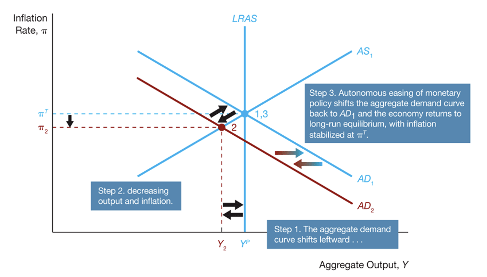
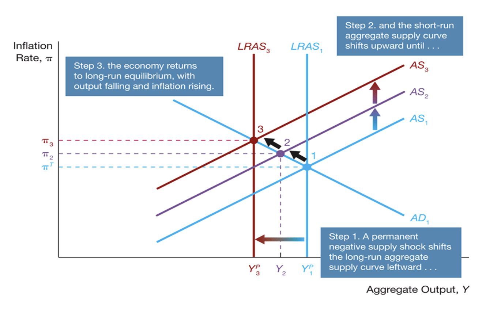
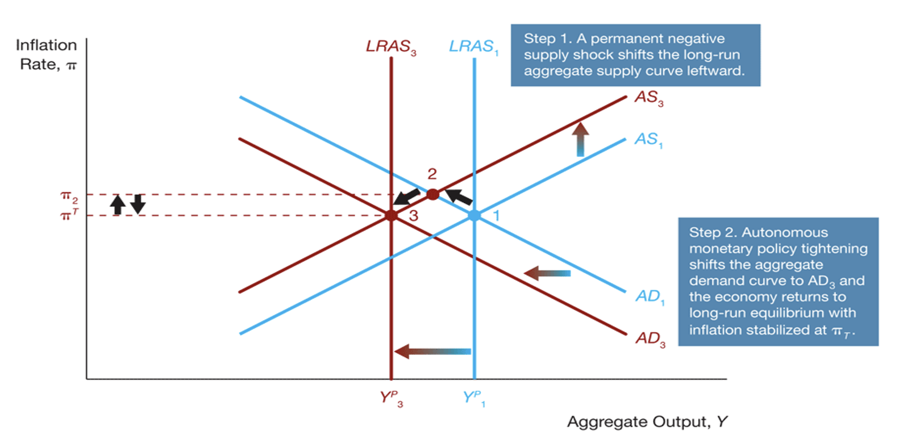
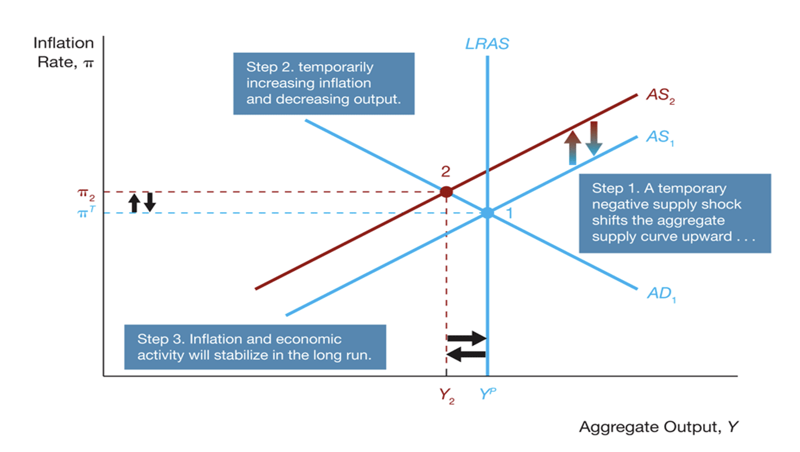
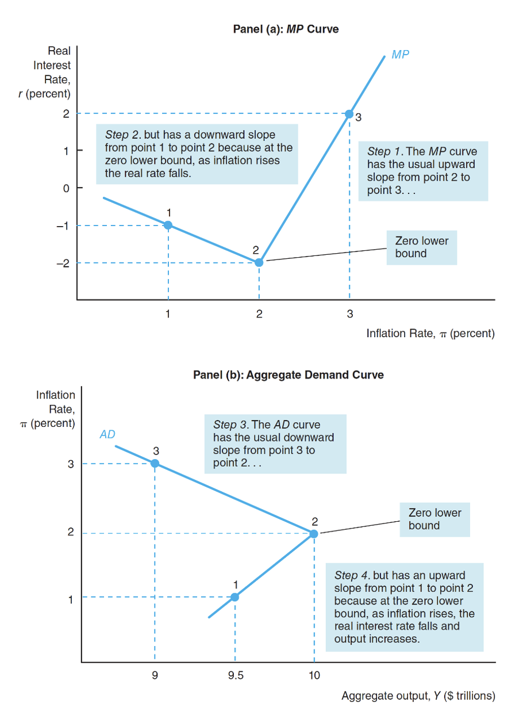
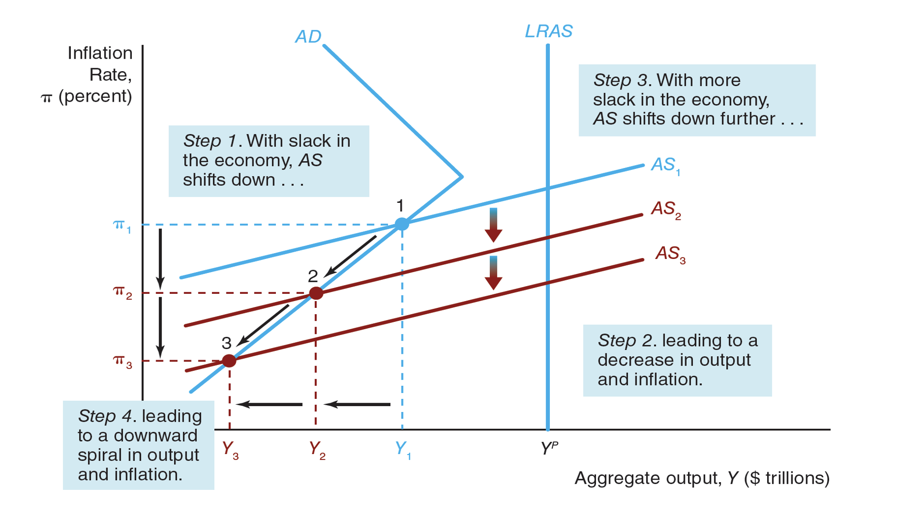

Negative AD Sock => AD Curve Shift Down => New short-run eq => $Y_2$ < $Y_P$ and $\pi_2$ < $\pi^t$
$y_2 < y_p$ => slack labor market => $\downarrow$ w => $\downarrow \pi$ => SRAS shifts right => New Long-Run Eq. at 3. $Y = Y_P$ and $\pi = \pi_2$. Notice that $\pi_3 < \pi_2 < \pi^T$

At 2, => Monetary policy => Monetary Easing => Shifts the AD Curve back up.


At eq 1: decrease in predict output => increase in inflation rate => increase in expected inflation rate => decrease in SRAS
At eq2: $y_3 > y_2^P$ => Positive output Gap => Tight Laour => increase in w => Increase in p => increase in inflation rate => increase in expected inflation rate => SRAS shifts to the left (up) and become SRAS_3
Shocks to long-run aggregate supply generates short-run flunctuations
Real Busines Cycle Theory: Shocks to individuals' performance and technology shifts LAS curve. This in turn generates short-run fluctuations => Neo-classical explanation of business cycles
In 2: $Y_2 > Y^P_3$ => Monetary Tightening (Contractionary) via OMS
Then, the inflationr rate at 2 will be higher than the final inflation rate.

Recall that the SRAS equation is $$ \pi = \pi^e - w(u-u_n) + \rho $$
The shock is captured by $\rho$ in the SRAS equations. Now, if there is an increase in inported gods price => increase in $\rho$ => SRAS shifts to the right
Therefore, at 2, the labor market is lsack => decrease in wage => decrease in in price level => decrease in inflation rate => decrease in expected inflation rate => SRAS will shift down
Now, if you don't do anything it is will eventually shifts down because of the self-correction mechanism. Therefore, we will end up in the initial point.
At eq2
Therefore, you need to make a choice to stablise the prices (inflation rate) or you can choose to stablise the output. You cannot do both at the same time!

Now, people found new tools to fix the issue as it was not easily fixed with the forementioned tools. Particularly, some of the interest rate is falling close to zero.
Now, what if the $i \approx 0$ => ZLB
When, $i \approx 0$, the traditional MPs will NOT work <= policy rate (i) cannot be negative because of Arbitrary Conditions. However, note that real interest rate can be negative if interest rate is lower than the real interest rate (Notice $r = i - \pi$ by simplified fisher's equation).
MP: $r = \bar{r} + \lambda \pi$ Taylor's principle
Increase in $\bar{r}$ => MP tightening => increase in r => decrease I => decrease in aggregate demand
Decrease in $\bar{r}$ => MP easing => decrease in r => increase in I => increase in aggregate demand of output
Note that CBs decrease the real interest rate by lowering the policy rate ($i$)

Because of slack labor market, the SRAS shifts down as the inflation expectation decrease. However, this does not but simply shifts the curve further to the left and keep decreasing the actual output

As the self-correction is not working at ZLB => You need to do something as a CB. Hence, monetary policy is required. Yet, traditional policies will not work as the nominal interest rate is already at 0. Hence, new policies are developed